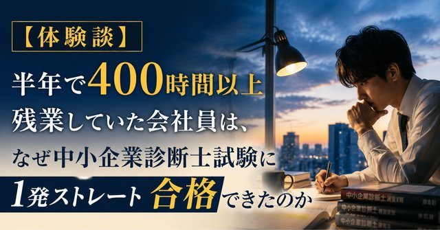
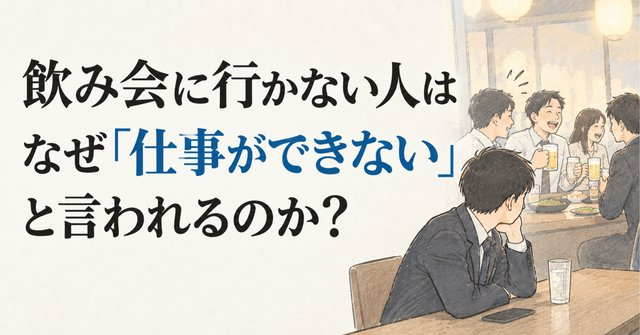
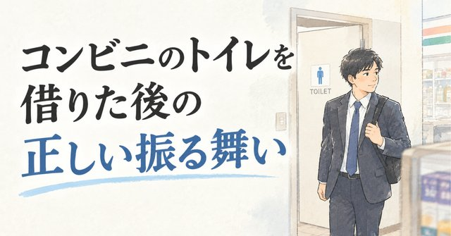
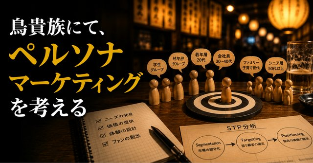
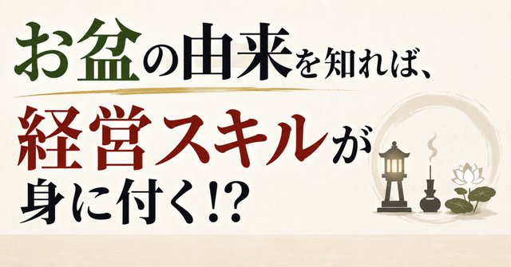
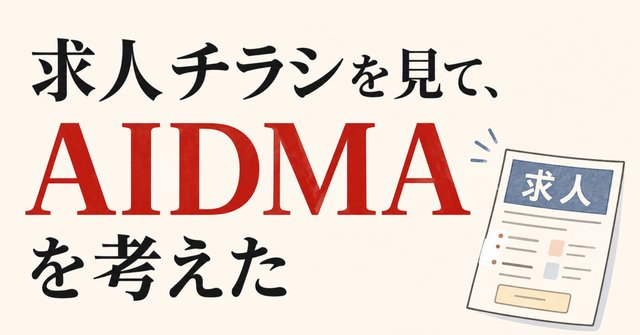

おすすめの記事
管理会計と経営学で「仕事と人生の悩み」を考える記事の中から、まず読んでほしい8本を選びました。
2026年11月14日 更新

1半年で400時間以上残業していた会社員は、なぜ中小企業診断士試験に１発ストレート合格できたのか
本業をおろそかにしない、が原則。激務のなかで約500時間の勉強をどう捻出し、どう使ったか。実体験ベースの合格記です。
noteで読む
2飲み会に行かない人はなぜ『仕事ができない』と言われるのか？
「飲み会も仕事である」は本当か。日本の人事制度では「協調性」が能力として査定されます。メンバーシップ型雇用という仕組みから読み解きます。
noteで読む「育児は仕事よりも大変だった」と、聞いてもないのに言った育休明けの男性
育休明けの男性が言った「育児は仕事より大変だった」。厚労省の調査では、育休取得者の穴を代替要員なしで同じ部門が埋めた事業所が約8割。取る側と残る側、両方の大変さを見ます。
noteで読む
4コンビニのトイレを借りた後の正しい振る舞い
1日約100万人が使い、約4割は何も買わずに帰る。それでもタダで借りられるのはなぜか。「トイレだけ借りるのはあり？」論争を、経済学で整理します。
noteで読む
5鳥貴族にて、ペルソナマーケティングを考える
鳥貴族で先輩に試された「焼き鳥の値段をどう決めるか」。原価から積み上げるのではなく、客層と近隣の相場から値段を考える、ペルソナと市場価格法の入門編です。
noteで読む
6お盆の由来を知れば、経営スキルが身に付く！？
お盆の正式名称は盂蘭盆会。目連が餓鬼道に落ちた母を救おうとする物語から、物惜しみや与えることの構造を読み解き、経営の視点につなげるエンタメ回です。
noteで読む「AIを使っても楽にならない」は160年以上前に証明されていた！？
AIを使っても楽にならないのはなぜか。160年以上前にジェボンズが石炭で示した「効率が上がると総消費が増える」というパラドックスで、便利さが仕事を増やす構造を解説します。
noteで読む
8求人チラシを見て、AIDMAを考えた
ポストに入っていたパート求人チラシ。情報は整っているのに、なぜ応募が来なさそうなのか。購買行動モデルのAIDMAで読み解きます。一番大きい文字が「求人」であることの違和感から。
noteで読むプロフィール
- 資格
- 中小企業診断士
- 実務
- 経理・経営企画 12年
- 発信
- note「管理会計と経営学で仕事と人生の悩みを解説」連載中
- SNS
- X（旧Twitter）@kawa_ni_naruwa
事業会社で経理・経営企画を12年。予算、原価計算、部門別損益、経営会議の資料づくりまで、「会社の数字」の現場をひととおり経験してきました。半年で400時間以上残業する生活を経て一念発起し、中小企業診断士試験に1発ストレート合格。
仕事と人生の悩みは、理論で構造が見えると、
少しだけ軽くなる。
noteでは、残業・評価・お金・キャリアといった身近なモヤモヤを、管理会計と経営学の理論で解説する記事を書いています。難しい話を、ちゃんと面白く、理屈の精度は落とさずに。それがモットーです。
お問い合わせ
記事を読んで「何かお願いできそう」と思ったことがあれば、内容が固まっていなくてもお気軽にご相談ください。お力になれることがあるかもしれません。1〜2営業日以内にご返信します。
- 研修
- 執筆
- 講演
- 数字まわりの相談ごと
XのDMから
@kawa_ni_naruwa 宛にDMをお送りください。いちばん早く気づきます。
NOTEnoteのお問い合わせから
noteのプロフィールページ「クリエイターへのお問い合わせ」からご連絡いただけます。
※ 個別のメールアドレス・お問い合わせフォームの設置をご希望の企業様には、ヒアリング時にご案内します。